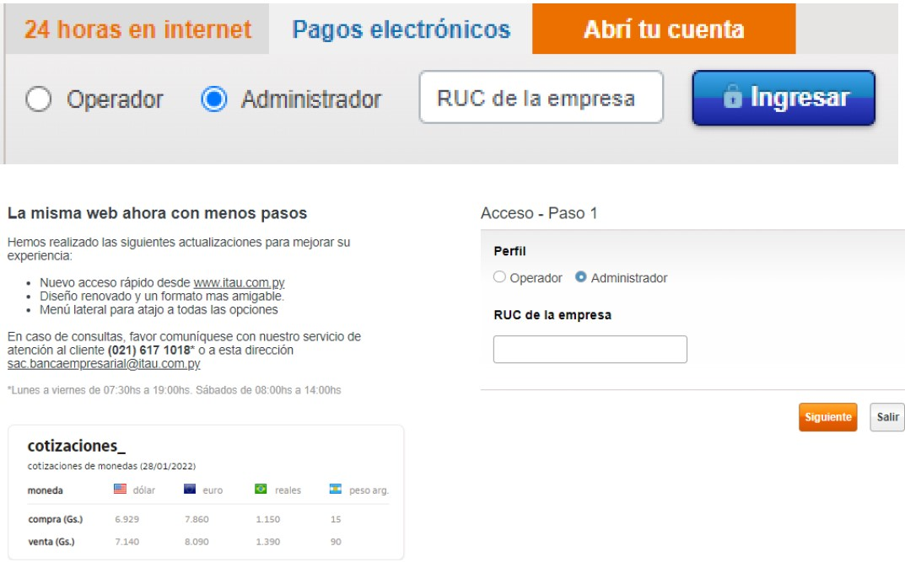
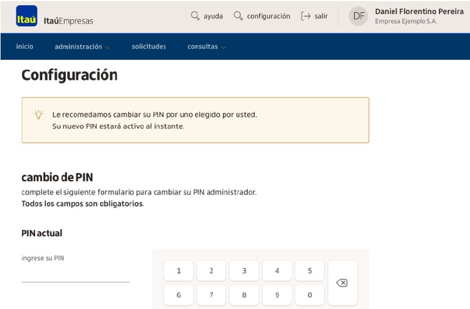
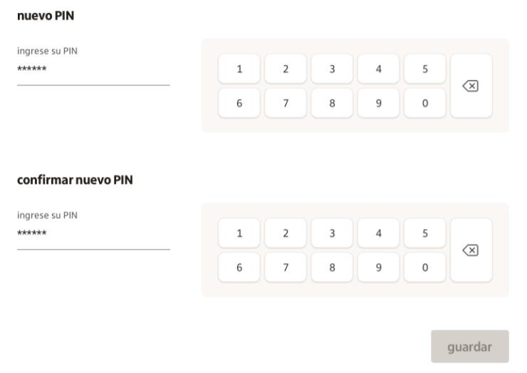
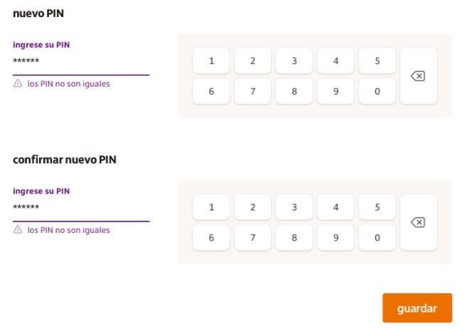
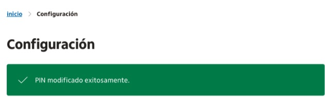

Ingresá a la página: https://www.itau.com.py/
Para acceder a la opción de contratación de servicios se debe ingresar a la plataforma de Pagos Electrónicos con el número de RUC de la empresa con el guion, y la contraseña (pin administrador).

Para realizar las modificaciones relacionadas el Pin, se deberá ingresar a la plataforma de Pagos Electrónicos, en la parte superior de la pantalla se encuentra la opción de "Configuración" donde se podrá gestionar el cambio de Pin de acceso.
Para realizar el cambio se requerirá primeramente ingresar el pin actual, y luego el pin nuevo.

El pin ingresado debera cumplir con las siguientes características:
Para finalizar la modificación se deberá ingresar el nuevo pin una vez más de modo a confirmarlo.

En caso de no haber coincidencias entre los pines ingresados, se mostrará en pantalla las alertas.

Al confirmar la modificación se mostrara el mensaje "Pin modificado".
Luego visualizar este mensaje deberá salir de la pagina e ingresar con el nuevo pin.
